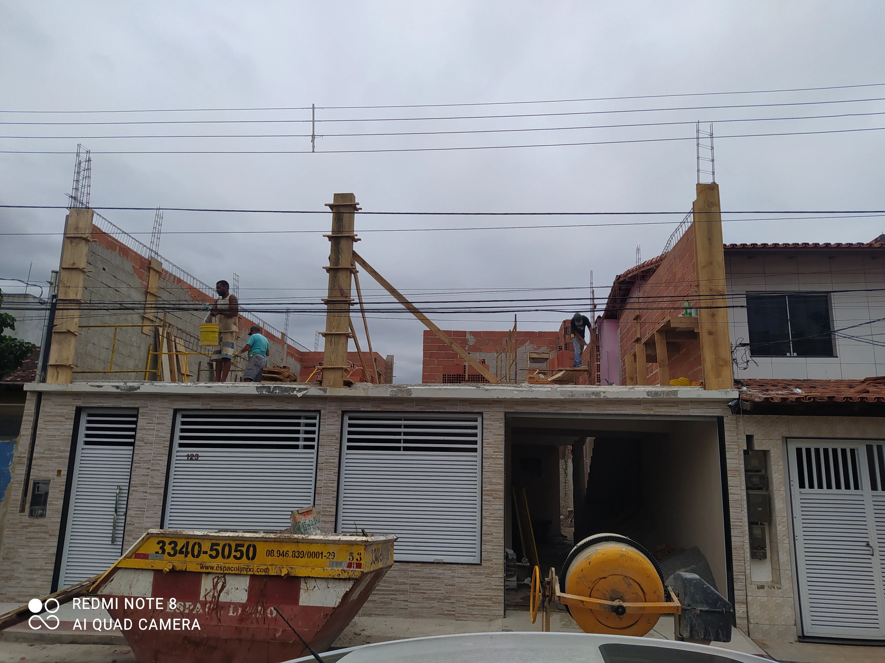

01
Reforma de cozinha


Reformas residenciais · Grande Vitória
Da demolição ao acabamento, a D'Martins coordena a reforma para você ter mais clareza, segurança e um resultado que valoriza o imóvel.
Resultados reais
As imagens abaixo mostram a evolução de uma cozinha e de uma fachada em obras de reforma acompanhadas pela equipe.


Como funciona
Seu próximo ambiente começa aqui
Envie uma mensagem pelo WhatsApp e receba orientação sobre os próximos passos.